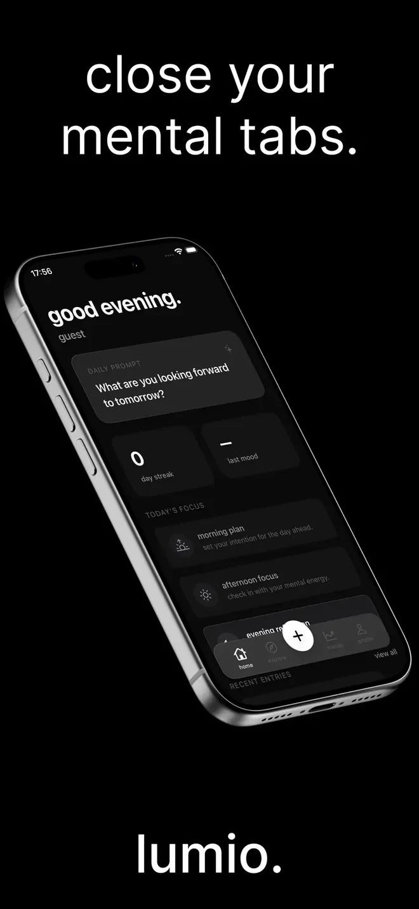
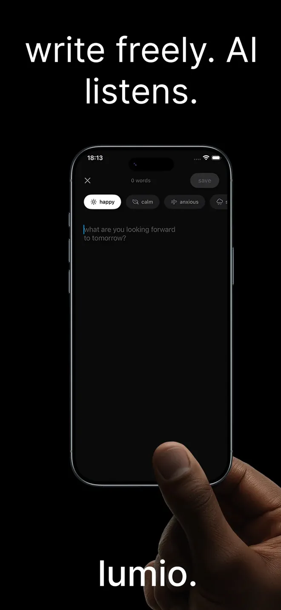
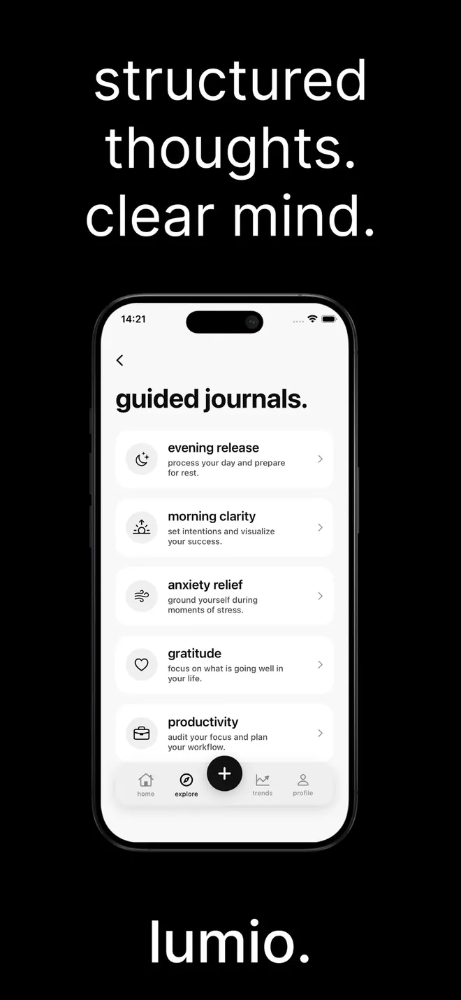
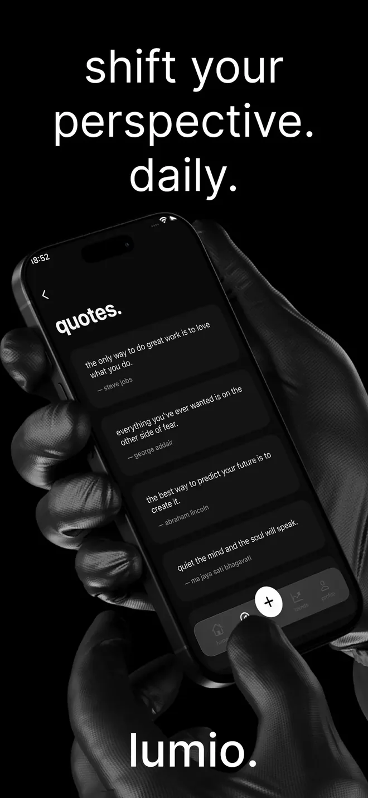

lumio.
Close your mental tabs. The AI journal that turns daily writing into real self-insight.Zihnindeki sekmeleri kapat. Günlük yazılarınızı gerçek bir iç görüye dönüştüren yapay zeka günlüğü.







A mirror for your mind.Zihnin için bir ayna.
Write freely. Lumio surfaces patterns in your thoughts and turns them into insight that deepens over time.Özgürce yazın. Lumio düşüncelerinizdeki kalıpları bulur ve zamanla derinleşen içgörülere dönüştürür.
AI that listens
Dinleyen yapay zeka
Lumio detects recurring emotions and patterns in what you write and delivers personalized insights.
Lumio yazdıklarınızda tekrar eden duyguları ve kalıpları bulur, size özel içgörüler sunar.
Mood and trends
Ruh hali ve eğilimler
Log how you feel each day and see weekly and monthly charts of your emotional journey.
Her gün nasıl hissettiğinizi kaydedin, duygusal yolculuğunuzu haftalık ve aylık grafiklerde görün.
Guided prompts
Yönlendirmeli sorular
Daily prompts adapted to your mood and growth goals, so you never face a blank page.
Ruh halinize ve hedeflerinize göre değişen günlük sorular. Boş sayfayla hiç karşılaşmazsınız.
Guided journals
Rehberli günlükler
Evening release, morning clarity, anxiety relief, gratitude and productivity sessions.
Akşam rahatlaması, sabah netliği, kaygı, şükran ve verimlilik seansları.
Breathing
Nefes
Find your baseline in 60 seconds before you write, so each entry is more honest.
Yazmadan önce 60 saniyede dengenizi bulun, her yazı daha dürüst olsun.
Private by design
Tasarımı gereği gizli
Your entries are encrypted. We never read or share what you write.
Yazılarınız şifrelenir. Yazdıklarınızı asla okumayız ve paylaşmayız.
Next: a second brain, built on Claude.Sırada: Claude ile kurulan ikinci beyin.
A long-term memory layer on Anthropic’s Claude that connects months of entries, notices the themes that keep returning and lets you ask questions across your own journal.Anthropic’in Claude modeli üzerine kurulan, aylar boyunca yazdıklarınızı birbirine bağlayan, tekrar eden temaları fark eden ve kendi günlüğünüze soru sormanızı sağlayan uzun vadeli bir hafıza katmanı.
- LiveYayında
Insights per entry
Yazı başına içgörü
Mood, emotions and patterns from each entry.
Her yazıdan ruh hali, duygu ve kalıplar.
- BuildingGeliştiriliyor
Memory across entries
Yazılar arası hafıza
Recurring themes found across weeks and months.
Haftalar ve aylar boyunca tekrar eden temalar.
- NextSırada
Ask your journal
Günlüğüne sor
Answers grounded in your own entries.
Kendi yazılarınıza dayanan cevaplar.
Start free.Ücretsiz başlayın.
Lumio Pro unlocks unlimited AI entries, full mood analytics, every exercise and prompt, and deeper pattern insights.Lumio Pro sınırsız yapay zeka yazısı, tam ruh hali analizi, tüm egzersiz ve sorular ve daha derin kalıp içgörüleri sunar.
Free
$0
Download Lumio and start journaling for free.
Lumio’yu indirin ve ücretsiz yazmaya başlayın.
Lumio Pro monthly
$9.99
Per month, after a 3-day free trial.
3 günlük ücretsiz denemeden sonra aylık.
Lumio Pro yearly
$59.99
Per year. Half the monthly price.
Yıllık. Aylık fiyatın yarısı.
U.S. App Store prices. Local prices may differ.ABD App Store fiyatları. Yerel fiyatlar farklı olabilir.
InformationBilgiler
- DeveloperGeliştirici
- Berat ErdoğanBerat Erdoğan
- CategoryKategori
- Health & FitnessSağlık ve Fitness
- ReleasedYayın tarihi
- March 10, 202610 Mart 2026
- VersionSürüm
- 1.0.11.0.1
- RequiresGereksinim
- iOS 17.0 or lateriOS 17.0 ve üzeri
- LanguageDil
- Englishİngilizce
- Age ratingYaş sınırı
- 9+9+
- PriceFiyat
- Free, with Lumio ProÜcretsiz, Lumio Pro ile